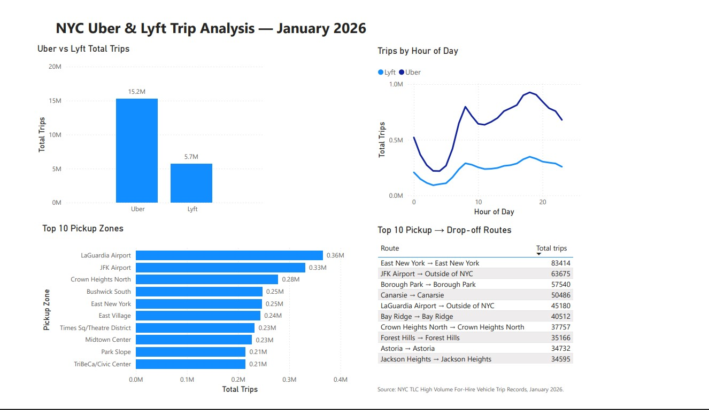
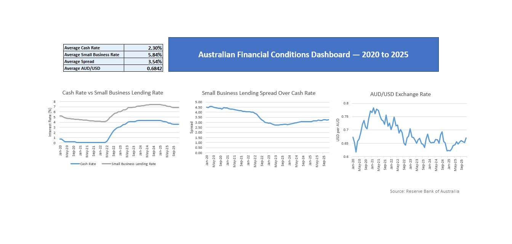

Data Analyst | SQL • PostgreSQL • Excel • Power BI • Power Query • BigQuery
GitHub LinkedInI am transitioning into data analytics after working in environmental reporting and compliance. My professional experience includes data validation, technical reporting, documentation and stakeholder communication. I am developing practical analytics skills through projects using SQL, PostgreSQL, Excel, Power Query, Power BI and BigQuery.

Analysed approximately 20.9 million NYC Uber and Lyft trip records to compare company activity, hourly demand, pickup zones and common routes.
View Project
Combined Reserve Bank of Australia cash rate, business lending and exchange rate datasets to analyse Australian financial conditions from 2020 to 2025.
View Project